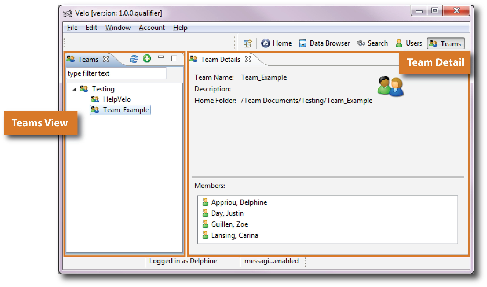
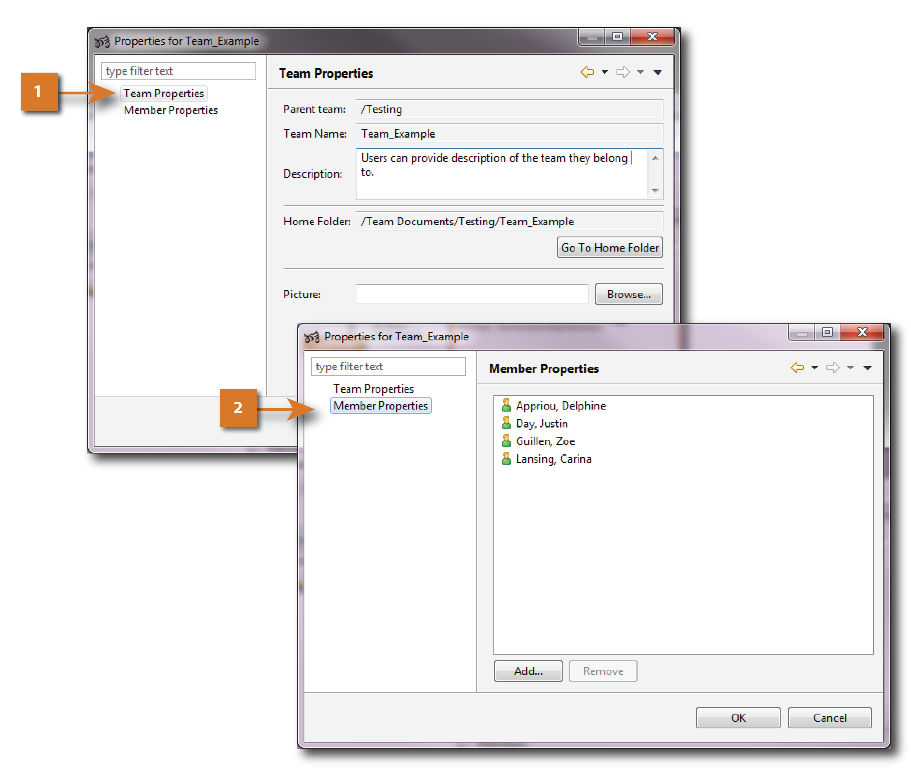

The Teams perspective provides a list of teams and additional information about the team, such as a description, the team’s folder location, and a picture.
The Teams Perspective is organized in two different views (Figure 1):

Figure 1. Teams Perspective Structure
The Teams view provides only the list of existing teams.
Any user is allowed to create a new Team by clicking on  . New teams can also be created by using a right-click in Teams view and selecting New>
. New teams can also be created by using a right-click in Teams view and selecting New>  Teams from the menu.
Teams from the menu.
Initial letters of a team name in the “filter text” box can be typed to see a reduced list of teams based on the filter criteria (Figure 1, [1]).
Double-click on the team name to open a dialog for modifying team properties (Figure 2). In the Team Properties window (Figure 2, [1]), team information can be modified (e.g., description, picture).
The Member Properties window provides a list of team members (Figure 2, [2]).

When a new Team is created, a folder with the Team's name is automatically created in the directory tree struture, under Repository>Team Documents visible in the Data Browser Perspective.. |